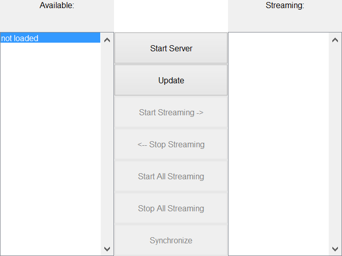

Contents
classdef smartphone_settings_ui < handle
Properties
properties
Parent
MainObj
Name = 'Smartphone Settings';
UI
Update
Tag = 'smartphone_settings_ui';
end
methods
function obj = smartphone_settings_ui(parent, mainObj)
if nargin == 0
obj.Parent = figure('Name',obj.Name,'NumberTitle','off','resize','on');
elseif nargin >= 1
if ishandle(parent)
obj.Parent = parent;
else
warning(['First argument needs to be a handle,'...
'new figure created.']);
obj.Parent = figure('Name',obj.Name,'NumberTitle','off','resize','on');
end
end
if nargin >= 2
obj.MainObj = mainObj;
else
obj.MainObj.DataBuffer = bf_data(obj.MainObj);
obj.MainObj.Mitm = mitm(1337,48000,4800,0,obj.MainObj);
end
obj.UI = obj.graphicsCode();
obj.Update = @obj.pbUpdateIDs_Callback;
end
PushButton Start Server Callback
function pbStartServer_Callback(obj,~,~)
if ~obj.MainObj.Mitm.is_running
obj.MainObj.Mitm.startSITM();
if obj.MainObj.Mitm.is_running
obj.UI.PbStartServer.String = 'Stop Server';
obj.UI.PbStartStreaming.Enable = 'on';
obj.UI.PbStopStreaming.Enable = 'on';
obj.UI.PbStartAllStreaming.Enable = 'on';
obj.UI.PbStopAllStreaming.Enable = 'on';
obj.UI.PbSynchronize.Enable = 'on';
else
warning('Failed to start server');
end
else
obj.MainObj.Mitm.stop();
if ~obj.MainObj.Mitm.is_running
obj.UI.PbStartServer.String = 'Start Server';
obj.UI.PbStartStreaming.Enable = 'off';
obj.UI.PbStopStreaming.Enable = 'off';
obj.UI.PbStartAllStreaming.Enable = 'off';
obj.UI.PbStopAllStreaming.Enable = 'off';
obj.UI.PbSynchronize.Enable = 'off';
else
warning('Failed to stop server');
end
end
obj.pbUpdateIDs_Callback();
end
PushButton Update Phone IDs Callback
function pbUpdateIDs_Callback(obj,~,~)
obj.UI.ListConnected.String = obj.MainObj.Mitm.getPhoneIDs();
obj.UI.ListStreaming.String = obj.MainObj.Mitm.getStreamingIDs();
if ~isempty(obj.UI.ListStreaming.String)
if isempty(obj.UI.ListStreaming.String{1})
obj.UI.ListStreaming.String = {};
end
end
end
PushButton StartStreaming Callback
function pbStartStreaming_Callback(obj,~,~)
if ~isempty(obj.UI.ListConnected.String) && ~isempty(obj.MainObj.Mitm.getPhoneIDs())
obj.MainObj.Mitm.startStreaming(obj.UI.ListConnected.String{obj.UI.ListConnected.Value});
fprintf('Started Streaming from %s\n',obj.UI.ListConnected.String{obj.UI.ListConnected.Value});
if obj.UI.ListConnected.Value < length(obj.UI.ListConnected.String)
obj.UI.ListConnected.Value = obj.UI.ListConnected.Value + 1;
else
obj.UI.ListConnected.Value = 1;
end
else
warning('Cannot start streaming when no phones are connected')
end
obj.pbUpdateIDs_Callback();
end
PushButton StopStreaming Callback
function pbStopStreaming_Callback(obj,~,~)
if ~isempty(obj.UI.ListStreaming.String) && ~isempty(obj.MainObj.Mitm.getStreamingIDs())
obj.MainObj.Mitm.stopStreaming(obj.UI.ListStreaming.String{obj.UI.ListStreaming.Value});
fprintf('Stopped Streaming from %s\n',obj.UI.ListStreaming.String{obj.UI.ListStreaming.Value});
if obj.UI.ListStreaming.Value > length(obj.UI.ListStreaming.String)
obj.UI.ListStreaming.Value = obj.UI.ListStreaming.Value - 1;
else
obj.UI.ListStreaming.Value = 1;
end
else
warning('Cannot stop streaming when no phones are streaming')
end
obj.pbUpdateIDs_Callback();
end
PushButton StartAllStreaming Callback
function pbStartAllStreaming_Callback(obj,~,~)
if ~isempty(obj.UI.ListConnected.String) && ~isempty(obj.MainObj.Mitm.getPhoneIDs())
obj.MainObj.Mitm.startAllStreaming();
fprintf('Started Streaming from all connected phones\n');
else
warning('Cannot start streaming when no phones are connected')
end
obj.pbUpdateIDs_Callback();
end
PushButton StopAllStreaming Callback
function pbStopAllStreaming_Callback(obj,~,~)
if ~isempty(obj.UI.ListConnected.String) && ~isempty(obj.MainObj.Mitm.getPhoneIDs())
obj.MainObj.Mitm.stopAllStreaming();
fprintf('Stopped Streaming from all connected phones\n');
else
warning('Cannot start streaming when no phones are connected')
end
obj.pbUpdateIDs_Callback();
end
Smartphone Settings Graphics Code
function UI = graphicsCode(obj)
n=8;m=3;
UI.TextAvailable = uicontrol(obj.Parent,'Style','text',...
'String','Available:','Units','Normalized',...
'Position',grid2pos([1,1, 1,1, m,n]));
UI.TextStreaming = uicontrol(obj.Parent,'Style','text',...
'String','Streaming:','Units','Normalized',...
'Position',grid2pos([3,1, 1,1, m,n]));
UI.ListConnected = uicontrol(obj.Parent,'Style','listbox',...
'String',{'not loaded'},'Units','Normalized',...
'Position',grid2pos([1,2, 1,n-1, m,n]));
UI.ListStreaming = uicontrol(obj.Parent,'Style','listbox',...
'String',{},'Units','Normalized',...
'Position',grid2pos([3,2, 1,n-1, m,n]));
UI.PbStartServer = uicontrol(obj.Parent,'Style','pushbutton',...
'String','Start Server','Units','Normalized',...
'Position',grid2pos([2,2, 1,1, m,n]),'Callback',@obj.pbStartServer_Callback);
UI.PbUpdate = uicontrol(obj.Parent,'Style','pushbutton',...
'String','Update','Units','Normalized',...
'Position',grid2pos([2,3, 1,1, m,n]),'Callback',@obj.pbUpdateIDs_Callback);
UI.PbStartStreaming = uicontrol(obj.Parent,'Style','pushbutton',...
'String','Start Streaming ->','Units','Normalized', 'Enable', 'off',...
'Position',grid2pos([2,4, 1,1, m,n]),'Callback',@obj.pbStartStreaming_Callback);
UI.PbStopStreaming = uicontrol(obj.Parent,'Style','pushbutton',...
'String','<-- Stop Streaming','Units','Normalized', 'Enable', 'off',...
'Position',grid2pos([2,5, 1,1, m,n]),'Callback',@obj.pbStopStreaming_Callback);
UI.PbStartAllStreaming = uicontrol(obj.Parent,'Style','pushbutton',...
'String','Start All Streaming','Units','Normalized', 'Enable', 'off',...
'Position',grid2pos([2,6, 1,1, m,n]),'Callback',@obj.pbStartStreaming_Callback);
UI.PbStopAllStreaming = uicontrol(obj.Parent,'Style','pushbutton',...
'String','Stop All Streaming','Units','Normalized', 'Enable', 'off',...
'Position',grid2pos([2,7, 1,1, m,n]),'Callback',@obj.pbStopStreaming_Callback);
UI.PbSynchronize = uicontrol(obj.Parent,'Style','pushbutton',...
'String','Synchronize','Units','Normalized', 'Enable', 'off',...
'Position',grid2pos([2,8, 1,1, m,n]),'Callback','warning(''Synchronisation not implemented yet'')');
end
ans =
smartphone_settings_ui with properties:
Parent: [1x1 Figure]
MainObj: [1x1 struct]
Name: 'Smartphone Settings'
UI: [1x1 struct]
Update: @(varargin)obj.pbUpdateIDs_Callback(varargin{:})
Tag: 'smartphone_settings_ui'

end
end